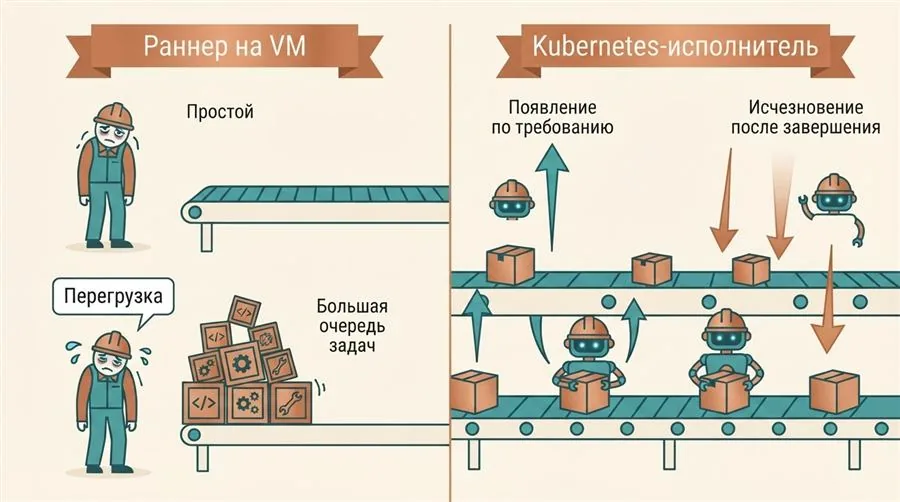
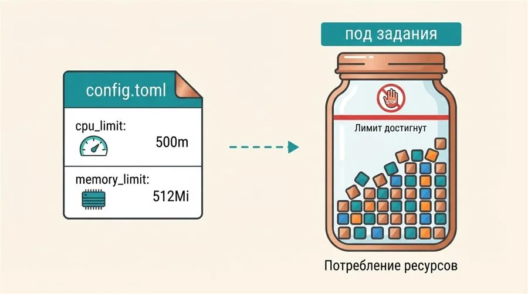
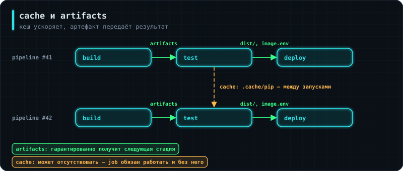
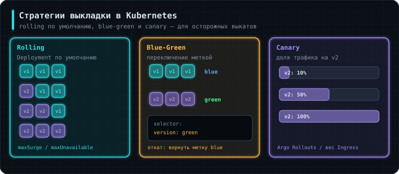

Задание 1 — раннер в кластере
Поставь GitLab Runner в Kubernetes через Helm с Kubernetes executor в отдельном namespace.
Проверка: каждая задача пайплайна запускается отдельным подом (kubectl get pods -n gitlab-runner -w во время пайплайна).
В уроке 3.2 CI-CD GitLab Runner ставился на отдельную VM — рабочий вариант, но статичный: одна VM обрабатывает задания, даже если сейчас ни одного пайплайна не запущено, или наоборот — не справляется, если запущено сразу несколько. В этом уроке раннер переезжает внутрь Kubernetes-кластера (того же самого, что и в уроках 5.2 Kubernetes в работе и 5.3 Helm и Kustomize): каждое задание пайплайна получает собственный под, который создаётся под задачу и удаляется по её завершении. Дополнительно пайплайн усложняется: образ собирается внутри кластера, staging обновляется автоматически, продакшен — вручную по тегу релиза, а секреты передаются приложению при запуске, а не вшиваются в образ.
.gitlab-ci.yml — условие, определяющее, когда именно должен запускаться конкретный этап пайплайна.Аналогия: раннер на выделенной VM — как содержать одного штатного грузчика, который либо простаивает без работы, либо не успевает, если заказов резко стало много. Раннер с Kubernetes executor — как вызывать грузчика по требованию, ровно на время конкретной задачи, и сразу отпускать после неё.
С Kubernetes executor раннер сам не выполняет задания напрямую — вместо этого при поступлении задания он создаёт в кластере отдельный под именно под это задание, а после завершения под удаляется. Это даёт эластичность: при нескольких одновременных пайплайнах кластер создаёт несколько подов параллельно, а в отсутствие заданий не расходует ресурсы на простаивающий раннер.

Аналогия: поселить раннер в собственный подъезд, а не в одну квартиру с самим приложением — так проще ограничить его права и не перепутать его ресурсы с ресурсами продакшн-сервисов.
kubectl create namespace gitlab-runner
Отдельный namespace изолирует под и служебные объекты раннера (Secret, ServiceAccount, RBAC-права) от подов самого приложения — это не только вопрос порядка, но и безопасности: правам раннера легче ограничиться его собственным namespace, а не всем кластером.
Аналогия: вместо ручной сборки раннера по чертежам — готовый набор для сборки с инструкцией, официально подготовленный производителем (GitLab).
helm repo add gitlab https://charts.gitlab.io
helm repo update
helm install gitlab-runner gitlab/gitlab-runner \
--namespace gitlab-runner \
--set gitlabUrl=https://gitlab.example.com/ \
--set runnerToken=glrt-<токен_раннера>
Токен glrt-… берут в GitLab: Settings → CI/CD → Runners → New project runner. Раннер сначала создаётся в интерфейсе GitLab (там же задаются теги и описание), а сам процесс получает только его токен аутентификации.
Во многих статьях и старых чартах встречается runnerRegistrationToken и gitlab-runner register --registration-token. Этот способ объявлен устаревшим ещё в GitLab 15.6, в новых инстансах он выключен, а удаление запланировано на GitLab 20.0. Для новых раннеров используй токены аутентификации glrt-.
Официальный Helm-чарт GitLab Runner сам создаёт Deployment для раннера, необходимые ServiceAccount и RBAC-права для того, чтобы раннер мог создавать поды заданий в кластере — вручную писать все эти манифесты с нуля не требуется.
Аналогия: токен раннера — как ключ-карта для входа в конкретное здание (GitLab-проект); хранить его открытым текстом в конфиге так же неразумно, как приклеить ключ-карту прямо на дверь снаружи.
kubectl create secret generic gitlab-runner-token \
--namespace gitlab-runner \
--from-literal=runner-token=glrt-<токен_раннера> \
--from-literal=runner-registration-token=""
# в values.yaml чарта: runners.secret: gitlab-runner-token
Токен подтверждает право раннера брать задания именно нужного GitLab-проекта или группы. Пустой ключ runner-registration-token чарт всё ещё ожидает в Secret по историческим причинам. Хранение его в Secret, а не в открытом виде в values.yaml или config.toml, снижает риск случайной утечки токена, например, при коммите конфигурации в репозиторий.
Аналогия: config.toml — должностная инструкция для раннера: каким образом создавать поды под задания, сколько ресурсов им разрешено занимать и какой образ использовать, если задание само не указало другой.
[[runners]]
name = "k8s-runner"
executor = "kubernetes"
[runners.kubernetes]
namespace = "gitlab-runner"
image = "alpine:3.22"
cpu_limit = "500m"
memory_limit = "512Mi"
cpu_request = "250m"
memory_request = "256Mi"
executor = "kubernetes" включает режим, при котором каждое задание выполняется в отдельном поде. cpu_limit/memory_limit защищают кластер от ситуации, когда одно задание с ошибкой (например, бесконечный цикл сборки) займёт все доступные ресурсы узла и помешает остальным подам. image = "alpine:3.22" — образ по умолчанию для подов заданий, если конкретное задание не переопределит его своим. Версию фиксируют явно: плавающие теги вроде docker:stable давно не обновляются и однажды тихо сломают сборку.

Аналогия: должностную инструкцию мало написать — нужно ещё официально утвердить её и приложить к личному делу конкретного сотрудника.
gitlab-runner register \
--non-interactive \
--url https://gitlab.example.com/ \
--token glrt-<токен_раннера> \
--executor kubernetes \
--config /etc/gitlab-runner/config.toml
При установке Helm-чартом регистрация происходит сама; команда нужна, когда раннер ставят вручную. Теги, «только защищённые ветки» и описание теперь задаются при создании раннера в интерфейсе GitLab, а не флагами register. Регистрация — момент, когда раннер сообщает GitLab о своём существовании и получает связанные с этим GitLab-проектом настройки. После регистрации именно этот раннер начинает подхватывать задания из пайплайнов проекта, используя параметры, описанные в config.toml.
Аналогия: цех сборки, который открывается под каждую партию и закрывается после неё: никакого постоянного оборудования, но и делить станок с соседним заказом не приходится.
С Kubernetes executor каждое задание — отдельный под, и Docker-демона в нём нет. Запускать Docker внутри пода (Docker-in-Docker) можно только в привилегированном режиме, а это фактически права root на узле кластера. Поэтому образы в кластере собирают инструментами, которым демон не нужен. Сейчас GitLab рекомендует BuildKit в rootless-режиме:
build:
stage: build
image:
name: moby/buildkit:rootless
entrypoint: [""]
variables:
BUILDKITD_FLAGS: --oci-worker-no-process-sandbox
before_script:
- mkdir -p ~/.docker
- echo "{\"auths\":{\"$CI_REGISTRY\":{\"auth\":\"$(printf '%s:%s' "$CI_REGISTRY_USER" "$CI_REGISTRY_PASSWORD" | base64 | tr -d '\n')\"}}}" > ~/.docker/config.json
script:
- buildctl-daemonless.sh build
--frontend dockerfile.v0
--local context=. --local dockerfile=.
--output type=image,name=$CI_REGISTRY_IMAGE:$CI_COMMIT_SHORT_SHA,push=true
--export-cache type=registry,ref=$CI_REGISTRY_IMAGE:buildcache
--import-cache type=registry,ref=$CI_REGISTRY_IMAGE:buildcache
rules:
- if: '$CI_PIPELINE_SOURCE == "merge_request_event"'
- if: '$CI_COMMIT_BRANCH == $CI_DEFAULT_BRANCH'
- if: '$CI_COMMIT_TAG'
buildctl-daemonless.sh поднимает BuildKit прямо внутри задания без root-прав, собирает образ по Dockerfile и сразу пушит его в реестр GitLab. Авторизацию в реестре приходится писать руками в ~/.docker/config.json — это и делает before_script. Тег — короткий хеш коммита: по нему всегда видно, из какого кода собран образ (3.2 CI-CD, §14). --export-cache/--import-cache хранят слои в реестре, чтобы следующая сборка их переиспользовала.
Ещё недавно стандартом для этой задачи был Kaniko от Google, и он до сих пор встречается в статьях и в чужих пайплайнах. В июне 2025 года Google заархивировал проект: обновлений и исправлений уязвимостей больше нет (живёт только форк от Chainguard). Для новых пайплайнов бери BuildKit rootless или Buildah. Учти: в некоторых кластерах rootless-сборке нужно ослабить seccomp/AppArmor для пода задания — проверь настройки раннера.
Правила rules перечисляют, когда задание нужно: в merge request (проверить изменения до слияния), в основной ветке и на тегах релизов. Остальные пуши в произвольные ветки сборку не запускают — экономия ресурсов кластера.
С Kubernetes executor каждое задание пайплайна выполняется в своём собственном, отдельном поде — под стадии build и под стадии test физически разные, и файловая система одного не видна другому. Образ передаётся через реестр, а мелкие результаты — через artifacts:
build:
# ...
after_script:
- echo "IMAGE=$CI_REGISTRY_IMAGE:$CI_COMMIT_SHORT_SHA" > build.env
artifacts:
reports:
dotenv: build.env
Ключ artifacts указывает GitLab сохранить перечисленные файлы во внутреннем хранилище сразу после завершения задания. Отчёт dotenv особенный: каждая строка ИМЯ=значение из файла становится переменной окружения во всех следующих заданиях пайплайна. Так стадия деплоя узнаёт точное имя образа, который собрала стадия build, хотя они выполняются в разных подах.
Аналогия: после сборки изделие проверяют дважды: на стенде в цеху (модульные тесты) и в реальных условиях, куда его привезли (смоук-тест после выкатки).
test:unit:
stage: test
image: $CI_REGISTRY_IMAGE:$CI_COMMIT_SHORT_SHA # тестируем ровно тот образ, что собрали
script:
- pytest tests/unit --junitxml=report.xml
artifacts:
reports:
junit: report.xml
smoke:staging:
stage: verify
needs: ["deploy:staging"]
image: curlimages/curl:8.10.1
script:
- ./scripts/smoke.sh "$STAGING_URL"
Модульные тесты запускаются внутри собранного образа: так проверяется не только код, но и то, что в образ попали все зависимости. Смоук-тест — тот самый скрипт из 5.2 Kubernetes в работе, §9 — запускается после выкатки на staging и проверяет весь путь от домена до базы. Если смоук упал, пайплайн красный, и до продакшена изменения не дойдут.
Аналогия: опытную партию отправляют на тестовый склад сразу после контроля качества, а в магазины — только после подписи начальника и с официальной маркировкой (тегом).
deploy:staging:
stage: deploy
script:
- helm upgrade --install shop ./charts/shop --namespace staging
--set image.tag=$CI_COMMIT_SHORT_SHA --atomic --wait
environment:
name: staging
url: https://staging.shop.example.com
rules:
- if: '$CI_COMMIT_BRANCH == $CI_DEFAULT_BRANCH'
deploy:prod:
stage: deploy
script:
- helm upgrade --install shop ./charts/shop --namespace prod
--set image.tag=$CI_COMMIT_SHORT_SHA --atomic --wait
environment:
name: production
url: https://shop.example.com
rules:
- if: '$CI_COMMIT_TAG =~ /^v\d+\.\d+\.\d+$/'
when: manual
Каждый коммит в основную ветку сам уезжает на staging — команда всегда видит там свежую версию. Продакшен выкатывается только для тегов вида v1.4.0 (семантическое версионирование, 0.1 Git, §13) и только по нажатию кнопки: when: manual требует, чтобы человек явно запустил задание в интерфейсе GitLab. environment регистрирует окружение в GitLab: на странице Environments видно, какая версия где сейчас работает, и туда же добавляется кнопка повторной выкатки предыдущей версии для отката. Флаги --atomic --wait разобраны в 5.3 Helm и Kustomize, §15.
Аналогия: ключ от сейфа не вклеивают в инструкцию к сейфу. Инструкцию печатают тиражом, а ключ выдают лично тому, кто будет открывать.
Частая ошибка — подставить пароль в конфиг во время сборки:
# ✘ пароль навсегда остаётся внутри образа
build:
script:
- echo "DB_PASSWORD=${DB_PASSWORD}" >> config.env
- docker build -t shop .
Такой образ содержит пароль в одном из слоёв. Его увидит любой, кто может скачать образ из реестра, — а скачивают его все узлы кластера, все раннеры и все разработчики. Удалить пароль из старых слоёв нельзя, только пересобрать образ и сменить пароль.
Правильно — образ без секретов, а пароль передаётся приложению при запуске, через Kubernetes Secret:
deploy:prod:
script:
- kubectl -n prod create secret generic shop-db
--from-literal=password="$PROD_DB_PASSWORD"
--dry-run=client -o yaml | kubectl apply -f -
- helm upgrade --install shop ./charts/shop --namespace prod --set image.tag=$CI_COMMIT_SHORT_SHA
--dry-run=client -o yaml | kubectl apply -f - — приём «создать или обновить»: create сам по себе падает, если секрет уже есть, а связка с apply работает и в первый раз, и в сотый. Значение PROD_DB_PASSWORD хранится в настройках проекта GitLab (Settings → CI/CD → Variables) с флагами masked и protected: оно не попадает в репозиторий и в логи, и доступно только заданиям на защищённых ветках и тегах. В чарте под получает пароль из Secret как переменную окружения (5.1 Kubernetes, §7). Ещё лучше — вообще не передавать пароль через CI, а брать его из хранилища секретов (6.2 DevSecOps, §3).
Аналогия: кеш — заготовки на складе, которые всегда можно завезти заново, если склад сгорит. Артефакт — единственный экземпляр готового изделия, который передаётся дальше по цеху: потеряли — переделывать всё сначала.

В §7 мы уже использовали artifacts, чтобы передать имя образа из одного пода в другой. Рядом с ним есть cache, и разница между ними — вопрос на собеседовании.
test:unit:
stage: test
variables:
PIP_CACHE_DIR: "$CI_PROJECT_DIR/.cache/pip"
cache: # ускорение: скачанные пакеты
key:
files:
- requirements.txt # ключ меняется при изменении зависимостей
paths:
- .cache/pip
artifacts: # результат: то, что создало задание
reports:
junit: report.xml
expire_in: 1 week
script:
- pip install -r requirements.txt pytest
- pytest --junitxml=report.xml
cache |
artifacts |
|
|---|---|---|
| Назначение | Ускорить работу | Передать результат |
| Что кладут | Зависимости, которые можно скачать заново | Собранные файлы, отчёты тестов |
| Гарантия | Никакой — может отсутствовать | Есть — следующая стадия получит |
| Область | Между запусками конвейера | Внутри одного запуска и для скачивания |
Удалите весь кеш и запустите конвейер заново. Он обязан пройти — просто медленнее. Если падает, значит в кеш положили то, что должно быть артефактом, и однажды это выстрелит на ровном месте: кеш теряется молча и без объяснений.
Ключ кеша задают по содержимому файла зависимостей (requirements.txt, package-lock.json, go.sum). Тогда кеш переиспользуется, пока список зависимостей не изменился, и обновляется автоматически, когда изменился.
Аналогия: конвейер, идущий сорок минут, разработчики перестают ждать — они переключаются на другую задачу и возвращаются через час. Обратная связь, приходящая через час, почти бесполезна.
Практическая цель — уложить основную проверку в 10 минут. Приёмы по убыванию отдачи:
Быстрое падение. Самые быстрые проверки — первыми. Линтер, находящий ошибку за 20 секунд, не должен стоять после десятиминутной сборки.
Параллельность. Задания одной стадии выполняются одновременно, и с Kubernetes executor это буквально разные поды:
test:unit:
stage: test
script: [pytest tests/unit]
test:integration: # выполняется параллельно с test:unit
stage: test
services: [postgres:17]
script: [pytest tests/integration]
Матрица — одно описание, много вариантов запуска:
test:
stage: test
parallel:
matrix:
- PYTHON: ["3.12", "3.13"]
DB: ["postgres:16", "postgres:17"]
image: python:$PYTHON-slim
script:
- ./run-tests.sh # четыре комбинации, все параллельно
Кеш слоёв образа. То, что мы разбирали в уроке 3.1: порядок инструкций в Dockerfile определяет, сколько слоёв придётся пересобирать. В конвейере это ещё заметнее, потому что сборка идёт с чистого листа каждый раз.
Не делать лишнего. Правила rules с changes позволяют не запускать сборку фронтенда, если изменился только бэкенд:
build:frontend:
rules:
- changes: ["frontend/**/*"]
Не с догадок, а с измерения: в интерфейсе видно длительность каждого задания. Обычно 80% времени съедают одна-две стадии, и почти всегда это скачивание зависимостей и сборка образа. Настроенный кеш и правильный порядок слоёв дают больше, чем любые тонкие настройки.
Аналогия: десять проектов с одинаковым конвейером, скопированным вручную, — это десять мест, где надо поправить одно и то же изменение. И девять мест, где о нём забудут.
Три механизма в GitLab CI:
# 1. include — подключить готовый файл из другого репозитория
include:
- project: 'platform/ci-templates'
ref: v2.1.0 # обязательно версия, а не main
file: '/templates/python-service.yml'
# 2. extends — унаследовать блок
.base-test: # точка в начале = шаблон, сам не запускается
stage: test
cache:
paths: [.cache/pip]
before_script:
- pip install -r requirements.txt pytest
test:unit:
extends: .base-test
script: [pytest tests/unit]
# 3. якоря YAML для мелких повторов
.defaults: &defaults
image: python:3.13-slim
tags: [k8s]
В GitHub Actions ту же задачу решают переиспользуемые workflow (workflow_call) и составные действия (composite actions).
ref: main означает, что чужое изменение в шаблоне попадёт в ваш конвейер без вашего участия — и сломает его в самый неподходящий момент. Это тот же принцип, что с тегом latest у образов из урока 3.1: без фиксации версии сборка перестаёт быть воспроизводимой.
В вакансиях встречаются обе системы, а нередко и обе сразу. Понятия соответствуют почти один в один, и знание одной системы переносится на другую за пару дней.
| GitLab CI | GitHub Actions | Что это |
|---|---|---|
.gitlab-ci.yml |
.github/workflows/*.yml |
Описание конвейера |
stages / job |
jobs / steps |
Этапы и задания |
rules: if: |
if: / on: |
Условия запуска |
artifacts |
actions/upload-artifact |
Передача результатов |
cache |
actions/cache |
Кеш зависимостей |
include / extends |
reusable workflows / composite actions | Переиспользование |
| CI/CD Variables | Secrets и Variables | Секреты и параметры |
| Runner | Runner | Исполнитель заданий |
environment |
environment |
Окружение с правилами доступа |
when: manual |
environment с обязательным одобрением |
Ручное подтверждение |
Заметная разница одна: в GitHub Actions существует огромный каталог готовых действий (actions/checkout, docker/build-push-action), и типовой конвейер собирается из них. В GitLab CI чаще пишут команды напрямую.
Строка uses: some-org/some-action@v1 означает выполнение чужого кода с доступом ко всем секретам задания. Тег v1 может быть перемещён автором на другой коммит в любой момент. Поэтому сторонние действия закрепляют по полному хешу коммита:
uses: some-org/some-action@a1b2c3d4e5f6... # неизменяемая ссылка
Аналогия: вопрос не в том, как доставить новую версию, а в том, сколько людей увидят поломку раньше, чем вы о ней узнаете.

Rolling — то, что Kubernetes делает по умолчанию: поды заменяются по одному. Дополнительных ресурсов не требует, но обе версии некоторое время работают одновременно, а значит должны быть совместимы между собой и с одной и той же схемой базы.
Blue-Green — рядом с работающей версией поднимается полная копия новой, её проверяют, затем трафик переключают целиком. В Kubernetes это делается изменением метки в селекторе Service:
spec:
selector:
app: myapp
version: green # было blue — переключение одним изменением
Откат мгновенный: вернуть метку обратно. Цена — двойные ресурсы на время выкладки.
Canary — новая версия получает небольшую долю трафика, метрики ошибок сравниваются со старой версией, доля постепенно растёт. Требует маршрутизатора трафика (Ingress с весами или service mesh) и настроенного мониторинга из урока 4.5 — без метрик решение об откате принимать не по чему.
При rolling обе версии кода работают с одной базой. При blue-green переключение мгновенное, а база всё равно общая. При canary — тем более. Совместимость схемы данных остаётся отдельной задачей, и решается она так же, как обсуждалось в уроке 5.3: миграция разбивается на шаги, каждый из которых совместим и со старым, и с новым кодом.
Интерактивная схема загружается…
Проверка кода на уязвимости — тема следующего урока. Здесь речь о другом: конвейер сам по себе является лакомой мишенью, потому что у него есть доступ ко всему.
Долгоживущие ключи — главная проблема. Ключ от облака в переменных проекта живёт годами, попадает в резервные копии, случайно печатается в логах. Современная замена — федерация через OIDC: конвейер предъявляет облаку подписанный токен своего запуска, облако проверяет его и выдаёт временные права на несколько минут. Постоянного секрета не существует вовсе.
Чужой код в конвейере. Задание, запущенное для внешнего предложения изменений, выполняет код автора этого предложения. Если такому заданию доступны секреты, автор просто печатает их. Отсюда правила: конвейеры для внешних веток выполняются без секретов, а доступ к боевым переменным даётся только защищённым веткам и тегам.
Права раннера. Раннер в кластере из §3 создаёт поды, а значит имеет заметные права. Ограничение его отдельным пространством имён и минимальной ролью — то, о чём шла речь в RBAC-разделе 5.2.
Логи. Маскирование переменных скрывает точное совпадение значения, но не спасает от вывода в изменённом виде (в base64, по частям, внутри JSON). Правило простое: секреты в конвейере не печатают вовсе, а set -x в скриптах с секретами не используют.
docker от привилегированного пользователя с монтированием сокета хоста? Это равносильно правам root на узле.Четыре метрики из исследования DORA — общепринятый язык, на котором говорят о зрелости процессов доставки. Их регулярно спрашивают, и не для того, чтобы услышать определения, а чтобы понять, измеряли ли вы что-нибудь вообще.
| Метрика | Что измеряет | Ориентир хорошего уровня |
|---|---|---|
| Частота выкладок | Как часто изменения попадают к пользователям | От раза в день до по требованию |
| Время от коммита до продакшена | Сколько идёт путь от коммита до работающей версии | Меньше дня |
| Доля неудачных выкладок | Какая часть выкладок вызвала сбой | Ниже 15% |
| Время восстановления | Сколько занимает возврат к работоспособности | Меньше часа |
Главная мысль исследования контринтуитивна: первые две и вторые две метрики не противоречат друг другу. Команды, которые выкладываются часто, ломают продакшн реже — потому что мелкое изменение проще проверить и откатить, чем накопленный за квартал релиз.
Не «у нас GitLab CI с тремя стадиями», а: «От коммита до staging — семь минут, до продакшена — с ручным подтверждением. Откат — revert коммита, около двух минут. Выкладываемся несколько раз в день, за последний квартал два отката». Числа показывают, что процесс существует и измеряется, а не просто настроен когда-то.
glrt-…; старые registration tokens устарели. Токен хранится в Secret, а не в открытом виде.vX.Y.Z и по кнопке.dotenv, отчёты тестов), потому что каждая стадия выполняется в своём поде.cache — ускорение, artifacts — результат. Кеш может пропасть в любой момент; конвейер обязан проходить и без него, только медленнее. Артефакт гарантированно попадает в следующую стадию.rules: changes.include из общего репозитория шаблонов, extends для наследования блоков. Подключаемый шаблон всегда фиксируют версией, а не main.Задания делаются на своей машине или в облаке. Отметь задание, когда выполнила проверку из его описания, — за каждое начисляется опыт.
Поставь GitLab Runner в Kubernetes через Helm с Kubernetes executor в отдельном namespace.
Проверка: каждая задача пайплайна запускается отдельным подом (kubectl get pods -n gitlab-runner -w во время пайплайна).
Собирай образ в кластере через BuildKit rootless или Buildah без привилегированного режима, с кэшем слоёв в реестре.
Проверка: под сборки не privileged; повторная сборка без изменений зависимостей использует кэш.
Пайплайн с окружениями review (на каждый MR, удаляется после слияния), staging (автоматически из main) и production (вручную по тегу).
Проверка: в GitLab → Environments видны все окружения с текущими версиями; MR создаёт и удаляет своё окружение.
Вынеси общие шаблоны задач в отдельный репозиторий и подключай через include: project с фиксированной версией (ref: v1.0.0).
Проверка: два разных проекта используют одни шаблоны; обновление шаблонов не влияет на проект, пока он не сменит версию.
Посчитай для своего проекта частоту деплоев и время от коммита до продакшена за последний месяц (по истории пайплайнов).
Проверка: цифры собраны и записаны; понятно, какая стадия занимает больше всего времени.